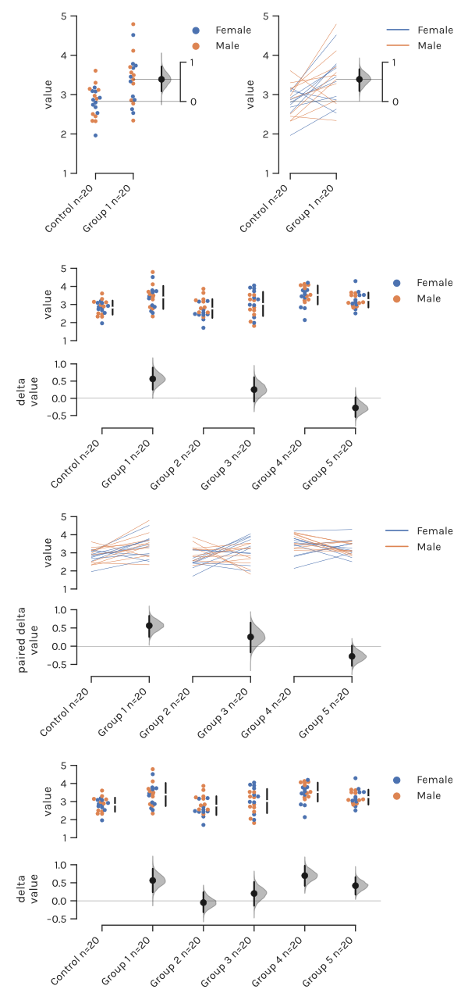

DABEST¶
Data Analysis with Bootstrap-coupled ESTimation¶
version 0.2.0
Analyze your data with estimation statistics!¶
News¶
- March 2019:
- Release of v0.2.0. This is a major update that makes several breaking changes to the API. See the Release Notes.
- January 2019:
- Release of v0.1.7. Added cumming_vertical_spacing option.
- October 2018:
- Release of v0.1.6. Added more keywords for control of plot elements.
- July 2018:
- Release of v0.1.5. bugfix for setup and package management
- Release of v0.1.4.
- June 2018:
- Release of v0.1.3. Also added a short tutorial for dabest in R.
- December 2017:
- We have made a webapp that produces Gardner-Altman and Cumming plots!